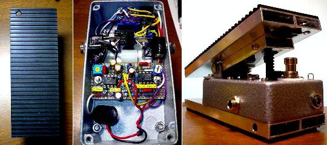
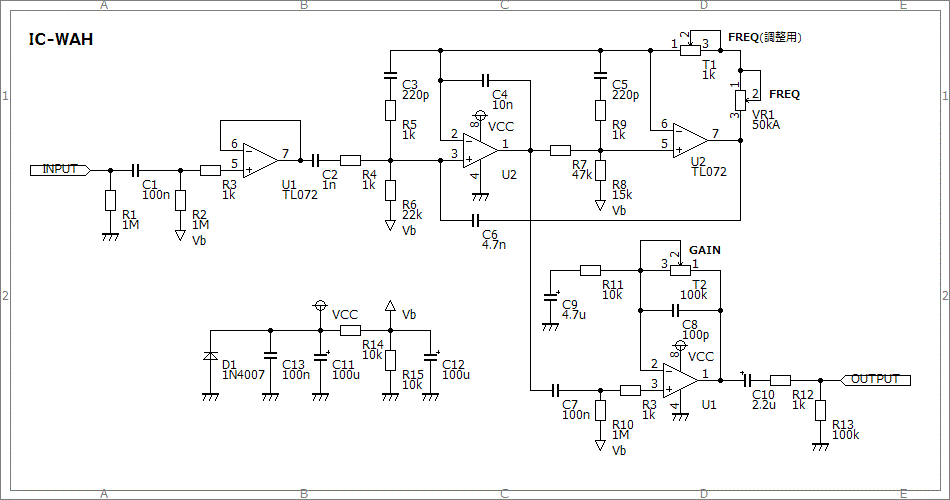
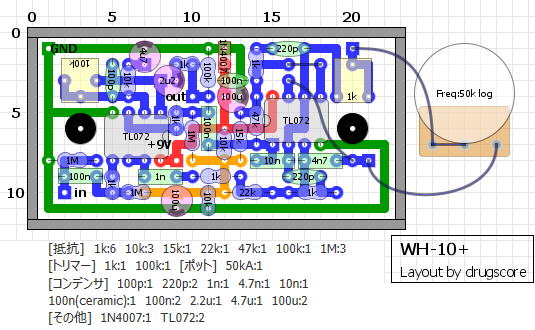
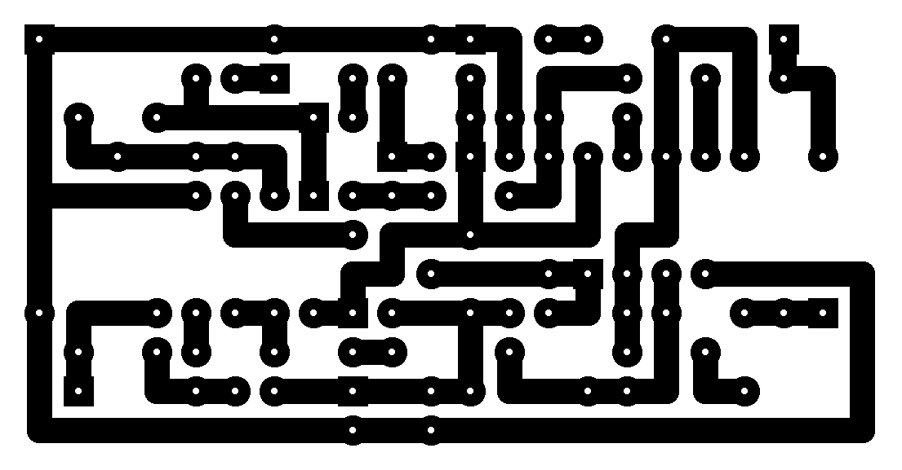

IC-WAH その2
2010年05月16日 カテゴリー：自作エフェクター（アナログ）

以前作ったIC-WAHですが、プラスチックケースで弱々しかったのと、ノイズが多い気がしたのでケース（ペダル）を自作してみることにしました。
MXRサイズのケース（GarrettaudioのAサイズのケース）に、3cm×1cmのアルミ角材（中は空洞）を使ってペダル部分と底板を取り付けています。ペダル部分だけつけると、かかと側に動かした際先端部分が起き上がってしまうので、長い底板をつけることで解決しました。底板はM3の長いネジで固定しています。全長17cmぐらいなのであまり小さくはないですが、通常のワウペダルよりはずっと軽いと思います。
▽回路図

▽周波数特性
IC-WAH その1 のページ
▽レイアウト

▽PCB（横58.4mm縦30.5mm）

あまり内部スペースがないため基板はかなり小さくしなければいけませんでした。電池は無理に入れなくてよかったかもしれません。ジャックの位置もかなり底に近い位置にずらしています。ポットはGarrettaudioのミニポットを使っています（シャフトを少し削ってワウのギアが取り付けられるようにしました）。今回は50kΩのAカーブにしてみました。こっちの方がワウのかかりが自然な気がします。
LEDはペダルに開けた穴から覗けますが、あまり見えません。でも軽いワウができたということでそれなりに満足しています。
（2016年11月9日回路図・部品リスト・PCB追加）